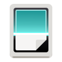

Docscan scans documents through SANE. F1 opens this help. File → Settings switches between English and German.
During scanning, the page builds from top to bottom. The red line and percentage indicate received image rows. An activity indicator appears before the first image data arrives. Depending on the driver, intermediate images may arrive later. The red line is never saved.
Use Scanner → Find scanners, then select a device, colour mode and paper source. Only driver-reported options are offered. Resolution is passed only when supported. For drivers with discrete resolutions, use one of the values shown in the validation message.
Choose the scan type using the gear button. Multiple flatbed pages are confirmed one at a time; the automatic feeder runs until empty or Stop. Duplex requires a corresponding source reported by the driver. Scanner → Cancel stops scanning and retains complete pages.
Select a page using the page selector at the bottom. The gear button opens scan settings. The Page menu offers rotation, cropping, moving and deletion. Crop coordinates are pixels: left, top, right and bottom. File → Import image / TIFF (Ctrl+O) imports images and all frames of a TIFF document.
File → Save PDF (Ctrl+S) exports all pages in their current order. PNG and JPEG export the selected page. Existing files are protected; choose a new name. PDFs contain raster images without OCR text. OCR, printing, email and PDF import are not included in version 0.4.0.
A recovery copy is saved after document changes inside .config/session and restored on restart. File → New document clears it after confirmation. Closing is blocked during running tasks. Preferences and rotating logs are kept inside .config. Help → Log displays diagnostics.
If no scanner is found, check power, connection and the installed SANE driver. Docscan does not install drivers. Tests use the SANE test backend. Real scanner operation requires separate hardware verification.
A detected scanner is shown with “Ready to scan”, device selection and a refresh button. The gear offers Single page, All pages from feeder (until empty or Stop), and Multiple pages from flatbed (replace each original and confirm the next scan). Unavailable paper sources cannot be started. Text prefers grayscale or monochrome; Image prefers colour. Colour mode can also be selected manually. OCR is not included.
File → Settings → Language selects an installed language. Install languages offers local JSON package import, including offline help. After import the language is immediately selectable; Save applies it without restarting, while Cancel keeps the active language. Existing packages are protected. To download from GitHub, enter the published base address, load the catalog and choose a language. Local import works without a published source. Eight additional languages are distributed separately from the DE/EN base package.